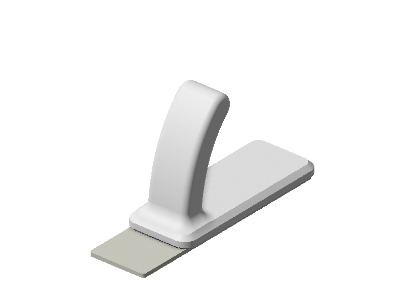
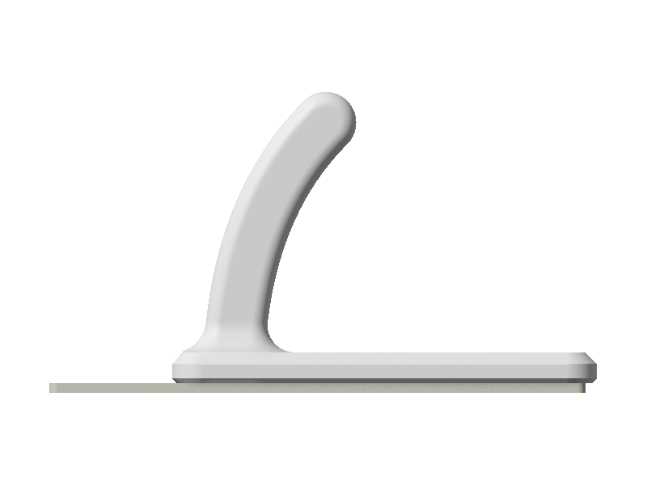

command-strip-hook
Drafted with AI, not yet reviewed
by keycap
Command-strip hook: a flat back for one of 3M’s removable adhesive strips and a hook that rises at its tip.
The back is sized for a Medium strip, 2 3/4 by 3/4 in (70 by 19 mm), pull tab included (Uline’s listing of 3M 17021); the tab’s length is a guess, so measure yours. The back covers the strip but for its tab, which hangs free below it. 3M rate a Medium strip for 3 lb, 1.3 kg.
Prints flat on its back, which keeps the face that the strip sticks to smooth: the bottom edge is chamfered against elephant’s foot and the top edges at 45 degrees, and the hook leaves the back square and leans at most 45 degrees at its tip. The hook’s arm then stands across the layers, its weak way, so it is thick and filleted into the back.
Unverified: the print.


Files
Source
// SPDX-License-Identifier: 0BSD // // Command-strip hook: a flat back for one of 3M's removable adhesive // strips and a hook that rises at its tip. // // The back is sized for a Medium strip, 2 3/4 by 3/4 in (70 by 19 mm), // pull tab included (Uline's listing of 3M 17021); the tab's length is a // guess, so measure yours. The back covers the strip but // for its tab, which hangs free below it. 3M rate a Medium strip for // 3 lb, 1.3 kg. // // Prints flat on its back, which keeps the face that the strip sticks to // smooth: the bottom edge is chamfered against elephant's foot and the top // edges at 45 degrees, and the hook leaves the back square and leans at // most 45 degrees at its tip. The hook's arm then stands across the // layers, its weak way, so it is thick and filleted into the back. // // Unverified: the print. // view: camera -50 30 // view: camera 0 0 // --- Parameters --- const PREVIEW = true; // draw the strip behind the back // The strip const STRIP = [19.1, 69.9]; // width and length, tab included const TAB = 16.0; // the pull tab, a guess const STRIP_T = 1.3; // The back const MARGIN = 1.5; // beyond the strip at the sides and the top const BACK_T = 4.0; // The hook, from the back's lower part const ARM_W = 14.0; // across const ARM_T = 8.0; // in the plane of the hook const REACH = 22.0; // straight out from the back const RISE = 12.0; // how far the tip rises, at 45 degrees const FILLET = 4.0; // --- Back --- // The plate in X and Y, lying on its back: Y is up when hung, Z out of the // wall. The strip's adhesive part, without its tab, sets its size. let size = [STRIP[0] + 2 * MARGIN, STRIP[1] - TAB + MARGIN]; let back = rect(size, #{round: 4}) .extrude([0, BACK_T], #{chamfer: [0.6, 1.5]}); // --- Hook --- // The hook's side, drawn with its X out of the wall and its Y up: out // from the back, then curving up to 45 degrees, a quadratic Bézier curve // whose middle control point is the corner the two directions make. let low = -size[1] / 2 + ARM_T / 2 + 4; let curve = [ [0, low], [REACH, low], [REACH + RISE, low + RISE], ]; let side = bezier_stroke(curve, ARM_T); // Extruded across, its rims rounded, and stood up: the side's X becomes Z. let arm = side .extrude(ARM_W, #{round: 2}) .rotate_y(-90); // --- Hook and back --- draw(union_round(back, arm, FILLET).intersection(-z)); // --- Strip --- if PREVIEW { let strip = rect([STRIP[0], STRIP[1]], #{round: 1}) .extrude([-STRIP_T, 0]) .move([0, size[1] / 2 - MARGIN - STRIP[1] / 2, 0]); draw_rgb(strip, 0.9, 0.9, 0.85); }